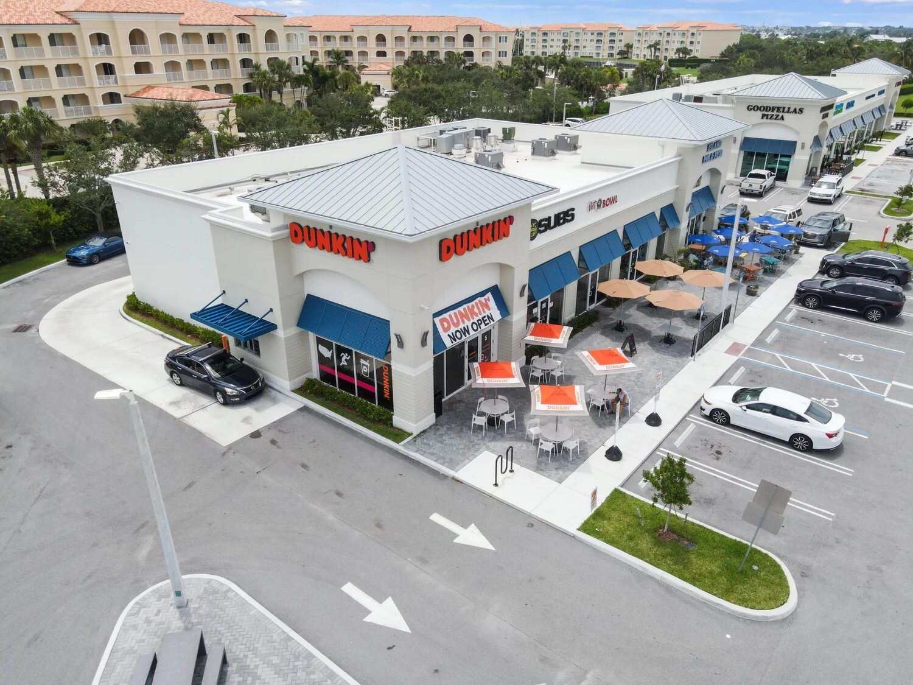
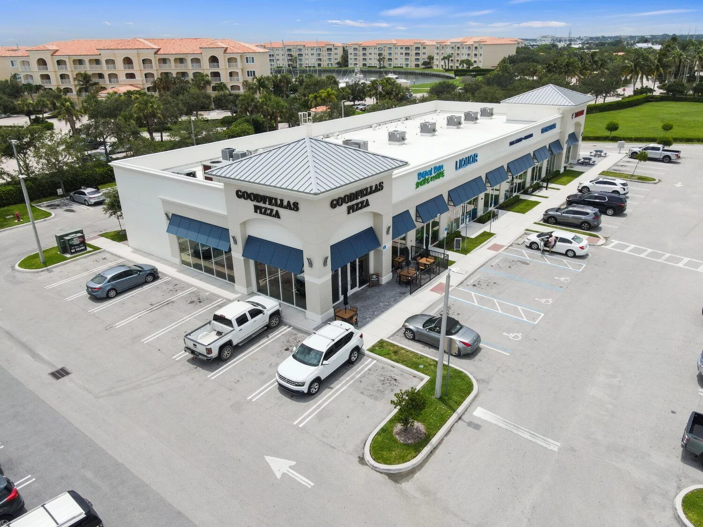
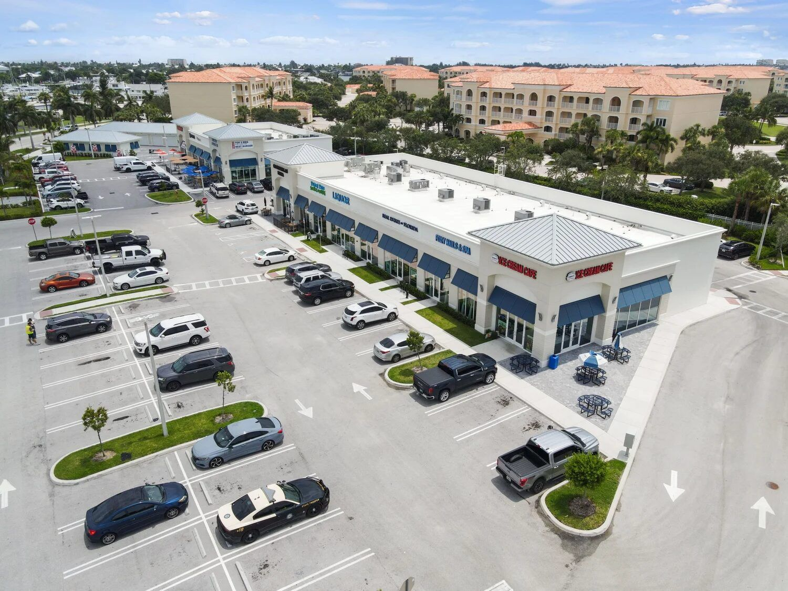
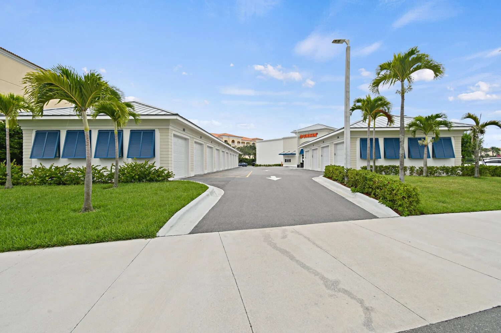
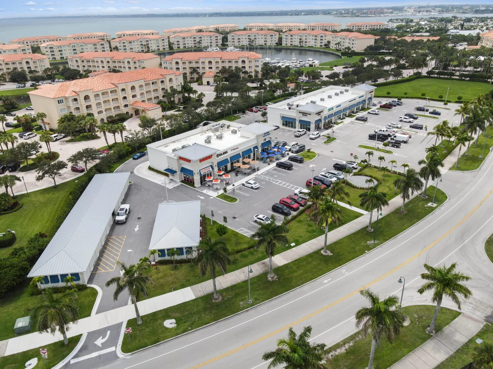

Retail — Ground Up

Harbour Cay II is a 17,200 SF coastal neighborhood retail center on South Beach in Fort Pierce — built from the ground up on 3.1 acres near the public beach. The center brings a strong mix of tenants to one of the Treasure Coast's most active beachside corridors: Dunkin', Island Pig & Fish, NYC Subs, Viet Bowl, Goodfellas Pizza, and Hershey's Ice Cream, among others.
A beachside retail center has to look right. The storefront glazing ties the whole facade together — clean aluminum framing, consistent sightlines across every tenant bay, and glass that holds up to salt air, UV, and South Florida's storm exposure. ACG delivered the complete glazing package for the entire center.
ACG handled the full storefront glazing scope for Harbour Cay II — every tenant bay, every entrance, every piece of glass across the 17,200 SF center. ESWindows product was spec'd throughout, delivering impact-rated storefront framing and glass that meets the Treasure Coast's wind and debris code requirements.
Ground-up retail means coordinating with the GC from rough opening through final punch on every bay — while multiple tenant improvements are happening simultaneously. ACG managed the scope from submittals through closeout, delivering a consistent glazing standard across the entire center.
Built for Mason Development & Construction — a Palm Beach-based commercial construction firm that specializes in retail, healthcare, and tenant improvement projects. Mason builds quality retail centers across South Florida, and Harbour Cay II is one of their signature ground-up developments on the Treasure Coast.
Harbour Cay II joins ACG's growing portfolio of retail and multi-tenant storefront projects, including Baron Shoppes of Tradition, Shoppes at Westlake Point, and Compass at Alton Town Center.




The glazing package on Harbour Cay Fort Pierce included multifamily glazing. ACG specified, supplied, and installed PGT impact, ESWindows — manufactured by ACG's six approved partner lines: ESWindows, Euro-Wall, PGT, Allegion, TGP, and Slimpact.
The scope was sequenced to Mason Construction's field schedule, with weekly coordination meetings, RFI turn-around inside 24 hours, and submittals tracked against the construction critical path. ACG's three-office Florida footprint (West Palm Beach HQ, Naples, Tampa) keeps a project supervisor within driving distance of every active job site, and the Fort Pierce location pulled supervision out of our West Palm Beach office.
Why this matters for the Fort Pierce market. Harbour Cay Fort Pierce is not just another envelope. Fort Pierce multifamily. Subcontractors who deliver here build a body of evidence GCs and developers can verify — first-pass inspection clearance, on-time turnover, accurate submittals, no callback claims. Those four metrics are how a glazing sub gets called back, and they are the entire reason ACG was selected for this scope.
For developers and GCs evaluating subcontractors for similar work in Fort Pierce or surrounding St. Lucie County, Harbour Cay Fort Pierce is on our portfolio precisely because it represents the standard of execution we hold across every project, regardless of size.
Retail centers, multi-tenant plazas, ground-up storefronts — ACG handles the full glazing scope. Try our Scope Engine or send your plans for a 48-hour turnaround.
Send Us Plans